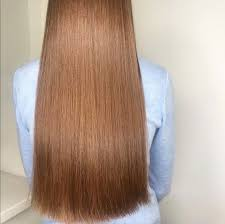
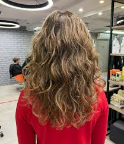
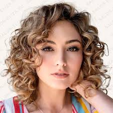

Введение
Волосы — важная часть внешнего вида и здоровья. Их состояние зависит от типа структуры (прямые, волнистые, кудрявые), толщины (тонкие, средние, грубые) и времени года. Правильный уход помогает сохранить волосы здоровыми, блестящими и послушными.
Различные структуры волос
Волосы делятся на четыре основных типа по форме:
- Прямые: гладкие, блестящие, но склонны к жирности у корней.
- Волнистые: мягкие изгибы, могут пушиться при высокой влажности.
- Кудрявые: чёткие спиральные завитки, сухие и требуют увлажнения.
- Вьющиеся: плотные, объёмные, легко ломаются.



Советы по уходу за волосами
Летом используйте УФ-защиту и ополаскивайте после моря.
Осенью защищайте от ветра и увлажняйте.
Зимой носите мягкую шапку и избегайте сухого воздуха.
Весной обновите стрижку и следите за балансом влаги.